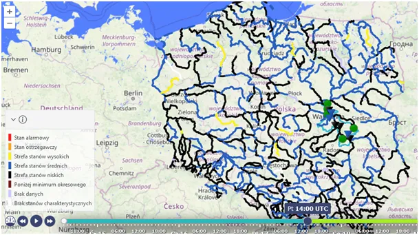
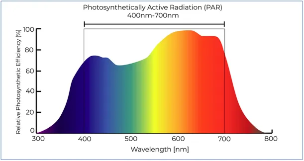
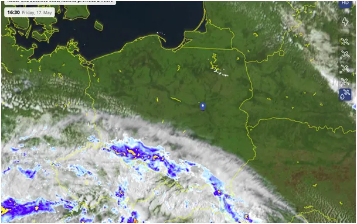
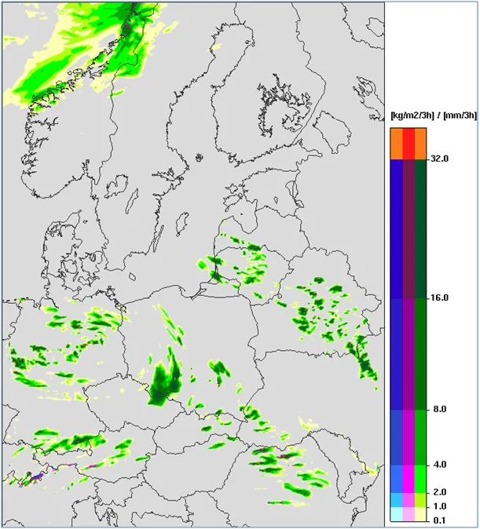
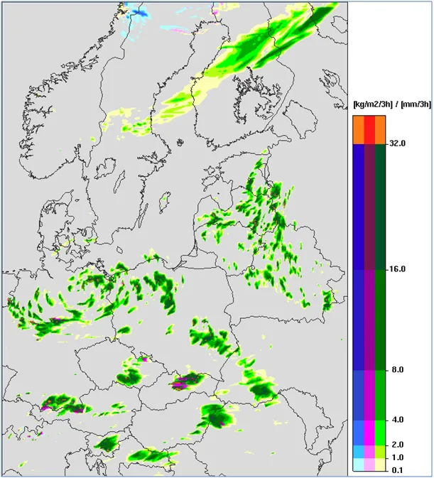

Rośliny nagrzewają Ziemię. Wyciąć wszystko, co zielone!
Warszawski ICM, jest jednym z lepszych pogodowych modeli prognostycznych. Zapowiada opady w weekend. Pada już na południu, co widać ze zdjęć na sat24, a Ci którzy tam mieszkają widzą to przez okno.

IMGW raportuje stan rzek i jest sucho, woda niska, w okresie intensywnej wegetacji, rośliny szybko wciągają wodę z gleby i promieniowanie słoneczne zamienia ją w główny gaz cieplarniany, w parę wodną, której udział w zjawisku cieplarnianym jest setki razy większy niż innych gazów takich, jak CO2, metan i inne śladowe czynniki w procesach zatrzymywania ciepła na Ziemi.

Więc te zabójcze dla planety rośliny generują efekt cieplarniany, ale to nie wszystko. Rośliny są zielone, czyli z całego spektrum słonecznego światła odbijają malutką, zieloną jego część a resztę absorbują, czyli zamieniają w ciepło w zakresie niewidzialnej dla człowieka podczerwieni podgrzewają powietrze, czyli atmosferę. Ta podczerwień dla człowieka tak zupełnie niewidzialna nie jest. Okiem jej nie zobaczymy, ale w skórze, jak węże, posiadamy receptory podczerwieni. To one w skórze nóg mówią nam, że piec, czy kaloryfer grzeje i przyjemnie je ogrzewa z odległości. Ciepło też możemy "zobaczyć" dłonią, gdy jej wewnętrzną stronę kierujemy do grilla, aby zmierzyć dosłownie, czy już możemy kłaść steki nad rozpalone węgle.

Możemy potęgę absorpcji ciepła przez zieleń zmierzyć tak samo dłonią o świcie. Ok. godz. 8:00 w słoneczny dzień, gdy powietrze jest jeszcze rześkie wysuńcie otwartą dłoń w stronę zwartego żywopłotu, czy gęstych krzewów, czy drzewa od oświetlonej strony. Z metra a nawet z kilku, przy bezwietrznej pogodzie, poczujecie ciepło bijące od zielonych liści.

Pamiętajmy, że dla światła słonecznego powietrze jest przeźroczyste, czyli Słońce nie nagrzewa powietrza. Powietrze nie jest przezroczyste dla podczerwieni, która dopiero nagrzewa atmosferę. Wykorzystujemy to w wielowarstwowych oknach, gdzie powietrze między kilkoma szybami łapie podczerwień i ogranicza utratę ciepła z naszego domu. Gdy powietrze jest chłodne, a Słońce świeci, wewnątrz liści jest ciepło i trwa wegetacja. Cuda wytłumaczalne podstawową fizyką.

Na wykresie spektrum światła słonecznego widzimy jak sprytnie został skomponowany skład roślin. Poza wąskim paskiem zieleni nie odbijają innych zakresów częstotliwości, absorbując wszystko zachłannie. Absorpcja po ludzku to sytuacja, gdy cząstki materii poddane danej częstotliwości fali elektromagnetycznej, jaką jest światło, wpadają z taką falą w rezonans i ich drgania są większe i szybsze, czyli temperatura cząstki rośnie. Wszystkie gazy atmosferyczne nie wpadają w żadne rezonanse ze światłem słonecznym dlatego atmosfera jest przeźroczysta a powietrze od światła się nie nagrzewa. To czysta fizyka, ale możemy alegorycznie powiedzieć, że między Słońcem a atmosferą "chemii brak".
Paweł Klimczewski